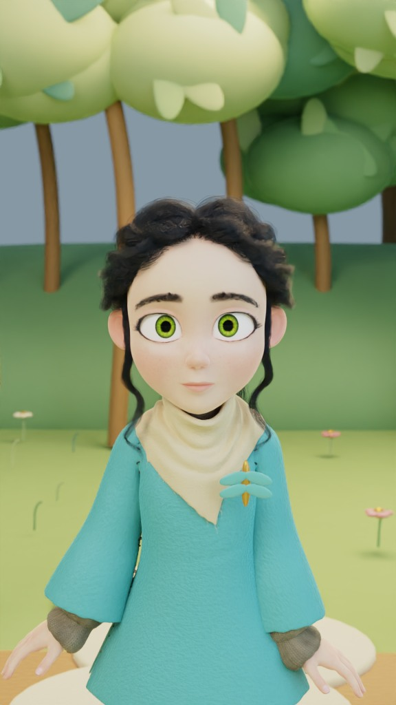
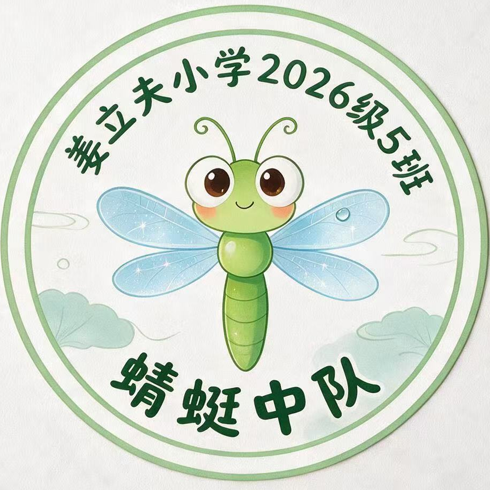

朋友会自己接着讲，遇到难题再请你帮忙。
选一次，故事自动播放。随时可以暂停。
朋友正在走进画面…
休息一下、看看远处。回来再接着玩。
挑一个字，读给家人听。
这是首批制作版，两科分别记录。当前覆盖范围如下；不是两本教材整册，也不代表学校当天的进度。
天、地、人、你、我、他：情境认读、字义匹配、交换说话人理解称呼。此课没有新增写字要求。
本集练习三人组中包含自己，以及圆圈双脚、三角形单脚的规则。未覆盖本页所有活动，不标为整课完成。找线索为原创推理活动。
记录只在此浏览器保存，不会自动发送给 Codex 或老师，也不自动同步其他设备。保存报告后可由家长分享。通关不等于知识掌握；操作次数不能用来诊断注意力。
配音为合成声音，不是家人、同学或老师的真实声音。人物为虚构造型，故事对白不代表真实教师意见。画面采用本地三维渲染片段与可操作的三维道具。
人物基础：Spring Rig，Blender Foundation / Blender Studio，CC BY 4.0；已改服装、材质、发型和表演。原创场景不是学校实景。